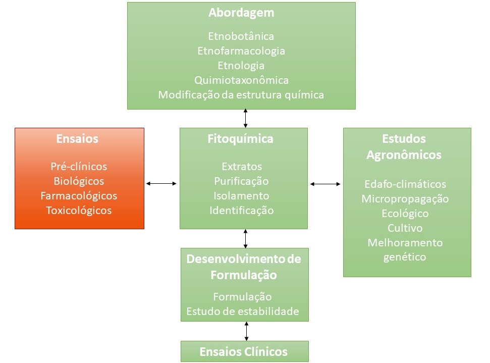

Após a obtenção dos extratos e substâncias isoladas da espécie vegetal em estudo, estas são submetidas aos ensaios pré-clínicos.
 Os ensaios pré-clínicos correspondem às pesquisas conduzidas com o objetivo de descobrir ou confirmar os efeitos farmacológicos e identificar os efeitos tóxicos do medicamento em experimentação que podem ser realizados in vivo, in vitro e em ex vivo. Ex.: pesquisa realizada em animais de laboratório a fim de comprovar a atividade anti-inflamatória da erva-baleeira (Cordia curassavica (Jacq.) Roem. & Schult) (BRASIL, 2013).
Os ensaios pré-clínicos correspondem às pesquisas conduzidas com o objetivo de descobrir ou confirmar os efeitos farmacológicos e identificar os efeitos tóxicos do medicamento em experimentação que podem ser realizados in vivo, in vitro e em ex vivo. Ex.: pesquisa realizada em animais de laboratório a fim de comprovar a atividade anti-inflamatória da erva-baleeira (Cordia curassavica (Jacq.) Roem. & Schult) (BRASIL, 2013).
Orientações sobre a condução destes estudos podem ser obtidas no Guia para condução de estudos pré-clínicos de toxicologia e segurança farmacológica necessários ao desenvolvimento de medicamentos. Todos os estudos ou ensaios devem ser conduzidos de acordo com as Boas Práticas de Laboratório.
São ensaios realizados sobre o tecido de um organismo em um ambiente externo com mínima alteração das condições naturais. Ex.: estudo da permeabilidade dos fármacos utilizando-se o epitélio intestinal de rã.
São os ensaios biológicos realizados fora dos sistemas vivos, no ambiente controlado e fechado de um laboratório e que são feitos normalmente em recipientes de vidro. Ex.: ensaios realizados em culturas de células cancerígenas para identificar substâncias anticancerígenas
São os ensaios farmacológicos realizados em animais vivos no ambiente controlado e geralmente fechado de um laboratório, ou ainda aqueles realizados em humanos. Ex.: edema de pata em ratos para identificar substâncias antiedematogências.